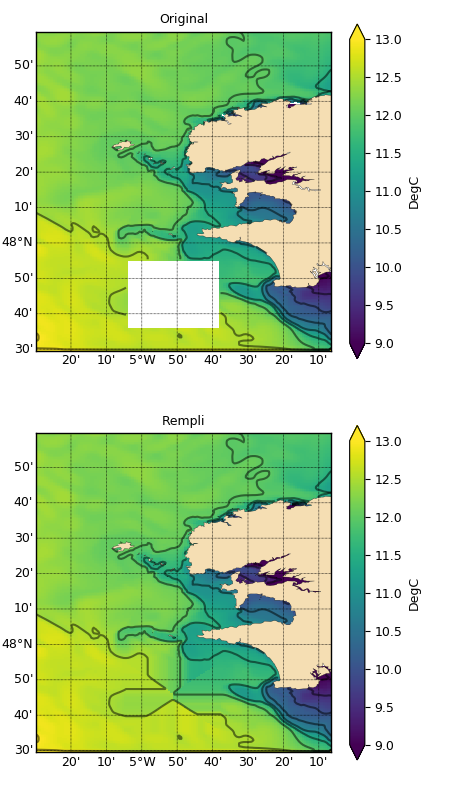

1.3.3.6.3.3.2. Remplissage 2D¶
Voir : fill2d() griddata() fill1d().

Replissage de valeurs manquantes par interpolation spatiale.
# -*- coding: utf8 -*-
# Lecture de la temperature
import cdms2, MV2
from vacumm.config import data_sample
from vcmq import code_base_name
f = cdms2.open(data_sample('mars3d.xy.nc'))
temp = f('temp', lon=(-5.5, -4), lat=(47, 49))
f.close()
temp.long_name = 'Original'
# On crée un trou
temp[15:60, 40:80] = MV2.masked
# On rempli des trous
from vacumm.misc.grid.regridding import fill2d
tempf = fill2d(temp, method='carg')
tempf.long_name = 'Rempli'
# On masque la terre
from vacumm.misc.grid.masking import masked_polygon
tempf[:] = masked_polygon(tempf, 'h', copy=0)
# Plots
from vacumm.misc.plot import map2 as map, P
P.rc('font', size=9)
kw = dict(vmin=9, vmax=13)
map(temp, show=False, subplot=211, hspace=.2, bottom=.05,
left=.08, top=.97, figsize=(4.5, 8), nmax=10, **kw)
map(tempf, show=False, subplot=212, savefigs=code_base_name(ext='png'), **kw)
P.close()